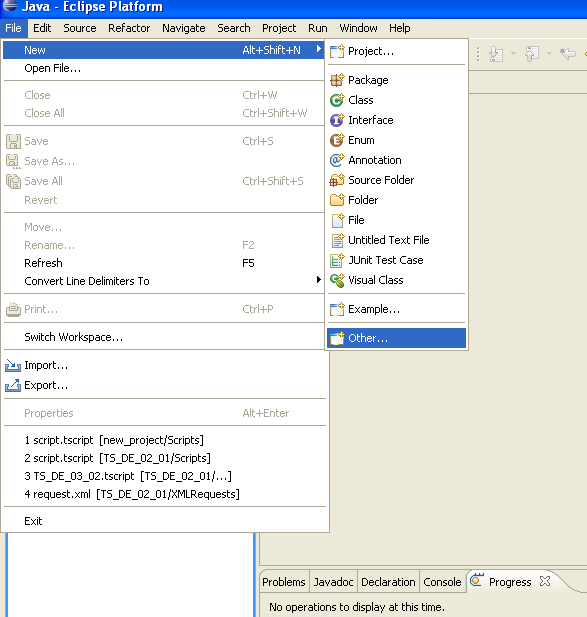
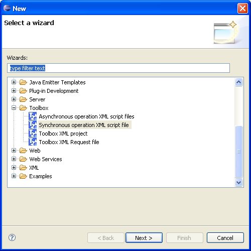
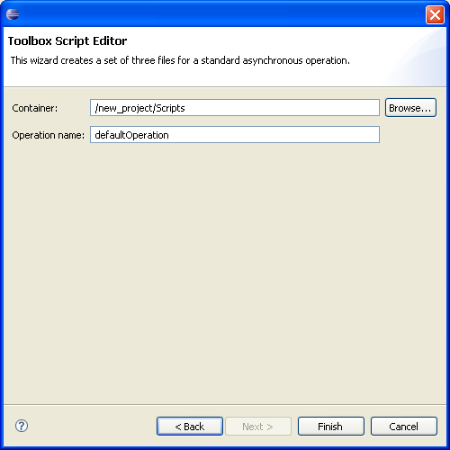
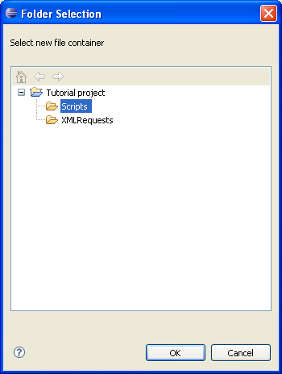
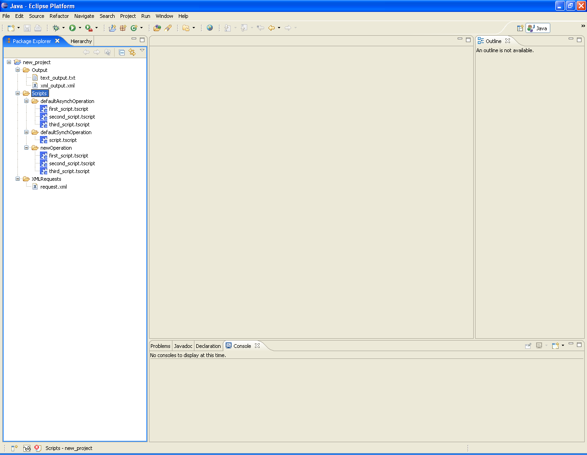

The creation of a Toolbox project provides two files that can be used for development and running/debugging. If necessary, Toolbox script and XML request files can be added to the project. To achieve this point select the "File" menu and click on the "New/Other" submenu.

A new dialog is shown and the type of the new file can be choosed. The images below show how to specify the creation of a Toolbox script file or an XML request. When the selection has been made, just click on the "Next" button.

In both case the procedure shows a dialog where it is possible to specify the path for creation and the file name. The image below shows the dialog in case of Toolbox script creation. When creating the XML request, the dialog shown has the same components.

To help the insertion of the container path it is possible to click to the "Browse..." button, forcing Eclipse to show a search frame (see the image below, where the "Tutorial project/Scripts" directory is selected). Select one directory and click on the "Ok" button.

The Container field is updated with the specified path. To finalize the creation procedure click on the "Finish" button (enabled when all required field are filled and none of them are conflicting). The new file is added to the project and shown into the Package Explorer frame (see image below where the "new_file.tscript" Toolbox script file has been created into the Scripts directory of the Tutorial project (To know how to create a new project, click here).
